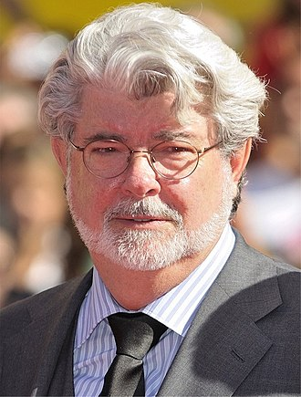

Jury
Steven Spielberg, Cinéaste primé avec plus de 50 ans d'expérience dans l'industrie cinématographique. Connu pour créer des histoires captivantes et leur donner vie à travers le cinéma. Reconnu pour ma capacité à créer un sentiment d'émerveillement et d'émotion chez le public, et pour ma capacité à travailler avec les acteurs et l'équipe pour faire ressortir le meilleur d'eux-mêmes. Il est Réalisateur, producteur délégué, acteur, monteur, producteur de télévision, réalisateur, écrivain de science-fiction, collectionneur d'œuvres d'art, scénariste, homme d'affaires, producteur de cinéma, scénariste de cinéma
George Lucas, Cinéaste primé et créateur de la franchise Star Wars avec une expérience éprouvée dans l'industrie du divertissement, il est notamment la personne qui nous donne indiana Jones sur les écrans qui fait un énorme succes, il est notament je sais pas il faut du texte aider moi je trouve que des trucs tellement n'imp. Pour American Graffiti, George Lucas se laisse convaincre par son épouse, la monteuse Marcia Lucas, ainsi que par Francis Ford Coppola de réaliser un film moins froid, moins abstrait, moins cérébral et intellectuel que les films vers lesquels il s'oriente depuis l'université31. Il prend l'idée de diriger un film commercial comme un défi et décide d'en faire une œuvre qui soit plus positive que le cinéma très sombre des années 1970, marqué notamment par le désespoir de l'enfoncement des États-Unis dans la guerre du Viêt Nam31. Il situe l'action de son film dans le début des années 1960, avant le début de la Guerre, le voulant comme un retour à une époque qui serait pour l'Amérique celle de l'innocence3